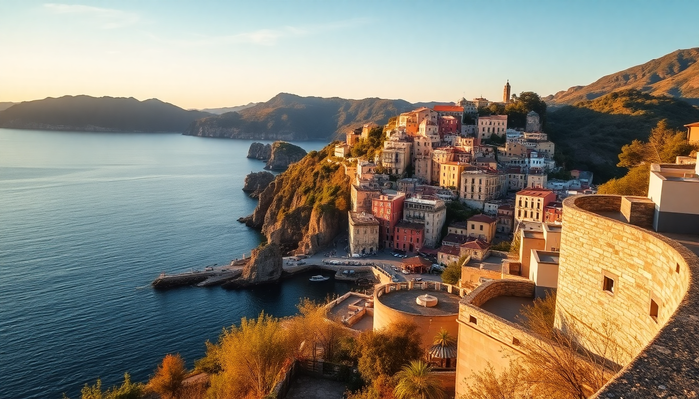

Best Time to Visit Cinque Terre: A Seasonal Guide for Italy

I’ve been to Cinque Terre three times now—once in August (mistake), once in late October (perfect), and once in early June (also great, but crowded). This guide breaks down what each season actually feels like on the ground, so you can pick the window that matches your tolerance for crowds, heat, and closed trails.
When is the best overall time to visit Cinque Terre?
Late spring (mid-April to early June) and early autumn (September to mid-October). That’s the sweet spot. Trails are open, ferries are running, and the villages aren’t shoulder-to-shoulder. I’d pick late September if I had to choose one week. The sea is still warm enough to swim off the beach at Monterosso, the vineyards on the hills above Vernazza are turning gold, and the light hits the pastel houses of Riomaggiore like a postcard. You also skip the August price hikes—rooms that go for €250 in August drop to €120 in October.
What is summer really like in Cinque Terre?
Hot, loud, and packed. July and August are the worst months for crowds. The footpath between Riomaggiore and Manarola (the famous Via dell’Amore) is often closed for maintenance, but even if it’s open, you’ll be shuffling single-file behind selfie sticks. The train between villages is a sweatbox—locals avoid it. I made the mistake of trying to hike from Monterosso to Vernazza on an August afternoon. It was 34°C, no shade, and the trail was a conga line. I turned back. If you must go in summer, book accommodation six months ahead, stay in Monterosso (the only village with a proper beach), and do everything early—hike by 7 AM, swim by 9 AM, hide indoors by noon.
When should I visit for hiking the trails?
April through October, but with caveats. The full Sentiero Azzurro trail from Monterosso to Riomaggiore is typically open from late March to early November. But sections close unpredictably due to landslides. In 2023, the stretch from Corniglia to Manarola was closed for months. Check the official Parco Nazionale delle Cinque Terre website before you go. My favorite hike is the high-altitude trail from Monterosso to San Bernardino—it’s less crowded, takes about 3 hours, and gives you views down over all five villages. Do it in April or October when the temperature stays under 25°C. Bring at least 1.5 liters of water per person. There are no fountains on the high trail.
What about winter—is it worth visiting?
Yes, if you want the villages to yourself. December through February is quiet. Most shops and restaurants in Vernazza and Riomaggiore stay open, but hours shrink—many close by 7 PM. The ferry stops running entirely. The train still runs every 30 minutes. I went in early January and had the main square in Vernazza almost empty at noon. The downside: many of the hiking trails are closed or muddy. The upside: hotel prices drop by half, and the locals are actually friendly because they’re not exhausted by tourists. I ate at Trattoria da Sandro in Monterosso without a reservation—the owner sat down and talked wine with me for 20 minutes. That doesn’t happen in July.
Which Cinque Terre village should I base myself in?
Monterosso is the most practical choice. It’s the only village with a flat, sandy beach, the largest train station (some express trains stop here but skip the others), and the widest range of hotels. We stayed at Hotel Villa Steno—perched on a hill above the old town, with a pool and a view of the sea. For a quieter vibe, Vernazza has the best harbor and a handful of solid hotels like La Mala, but it’s a 15-minute walk uphill from the train with luggage. Riomaggiore is photogenic but cramped—the main street floods with day-trippers by 11 AM. I wouldn’t recommend staying there unless you’re on a budget and don’t mind noise.
How do I get around Cinque Terre without a car?
The Cinque Terre Express train is your best bet. It runs between La Spezia and Levanto, stopping at all five villages. A single ticket costs €5 (2024 price) and is valid for 3 hours. A day pass for unlimited train and trail access is €18.20. Buy the pass at the station—the Trenitalia app also works, but the station kiosk is easier. Avoid the ferry in summer unless you’re going for the view—it’s slow, expensive (€20 one-way), and sells out by 10 AM. I used the ferry once from Monterosso to Riomaggiore and regretted it: 45 minutes on a packed boat with no shade. The train takes 8 minutes.
FAQ
Is Cinque Terre worth visiting in November? Yes, but with expectations in check. The weather is cool (10-15°C) and often rainy. The trails are muddy and some sections close. The ferry stops running. But you’ll have the villages to yourself, and you can eat at Il Pirata in Monterosso without queuing. I went in mid-November and hiked the high trail above Vernazza in a light jacket—saw maybe five other people in four hours.
What’s the cheapest month to visit Cinque Terre? January or February. Hotel rates drop 50-60% compared to August. The Cinque Terre Express runs year-round, so you can still village-hop. Just bring a rain jacket and expect some restaurant closures. We found a room at Hotel Porto Roca in Monterosso for €110 a night in February—same room goes for €350 in July.
Which trail is easiest for beginners? The Monterosso to Vernazza section of Sentiero Azzurro. It’s about 90 minutes, with some stairs but no scrambling, and the views over the vineyard terraces are stunning. Do it early in the morning—by 10 AM the sun hits hard. The path from Vernazza to Corniglia is steeper and more exposed. Skip the Via dell’Amore (Riomaggiore to Manarola) if it’s open—it’s paved and flat, but it’s always crowded and honestly a bit boring.
Conclusion
- Late September to early October offers the best balance of good weather, open trails, and manageable crowds.
- Monterosso is the most convenient base—beach, trains, and hotels all in one flat village.
- Avoid August unless you have no other choice; July is nearly as bad.
- Winter is underrated for solitude and low prices, but check trail status and ferry schedules.
- Buy the Cinque Terre Train & Trail pass at the station—it’s the simplest way to move between villages and access the paths.